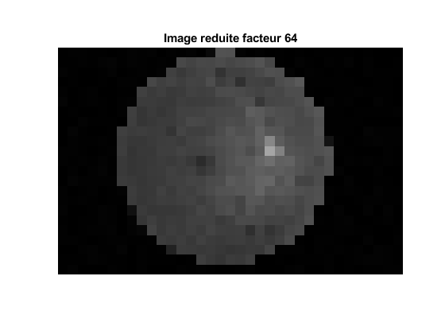

Contents
Exercice I
Q1
matrix=imread("fundus_image.png"); figure(1), imshow("fundus_image.png") title('Disque optique dans une image fundus') % Q2 type reduire.m % Q3 f = [2 4 8 16 32 64 150]; for i = 1:7 image_reduite = reduire(matrix,f(i)); figure,imshow(image_reduite,'InitialMagnification', 'fit') title(['Image reduite facteur ', num2str(f(i))]) end % Q4 % L'image est de plus en plus pixelisée et il y a une perte de résolution. % La segmentation du disque sera difficile à réaliser à partir du facteur % 32 et celle des vaisseaux à partir d'un facteur de 16.
function [I_reduite] = reduire(I_originale,f)
%UNTITLED2 Summary of this function goes here
% Detailed explanation goes here
%dims = size(matrix);
width = size(I_originale,1);
height = size(I_originale,2);
I_reduite = zeros(floor(width/f), floor(height/f), 'uint8');
for i=1:floor(width/f)
for j=1:floor(height/f)
I_reduite(i,j) = I_originale(i*f,j*f);
end
end
end
 Exercice II
Q1
matrix1=imread("crane1.png"); figure(9),imshow("crane1.png") title('Crane 1') [x1,y1]=ginput(2); matrix2=imread("crane2.png"); figure(10),imshow("crane2.png") title('Crane 2') [x2,y2]=ginput(2); matrix3=imread("crane3.png"); figure(11),imshow("crane3.png") title('Crane 3') [x3,y3]=ginput(2); % Q2 [p1] = improfile(matrix1,x1,y1); [p2] = improfile(matrix2,x2,y2); [p3] = improfile(matrix3,x3,y3); plot(p1, 'r') hold on plot(p2, 'g') hold on plot(p3, 'b') title('Profil des images') legend('crane 1', 'crane2 ', 'crane 3', 'Location', 'best'); hold off %Q3 yC1 = 120; yC2 = 150; xC1 = 114; xC2 = 144; yF1 = 155; yF2 = 185; xF1 = 59; xF2 = 89; % Q4 figure(12), imshow("crane1.png") title('Crane 1 avec regions'); hold on rectangle('Position',[114,144,120,150],'EdgeColor', 'r') rectangle('Position',[59,89,155,185],'EdgeColor', 'g') hold off % Q5 contraste1 = contraste(yC1, yC2, xC1, xC2, yF1, yF2, xF1, xF2, matrix1); contraste2 = contraste(yC1, yC2, xC1, xC2, yF1, yF2, xF1, xF2, matrix2); contraste3 = contraste(yC1, yC2, xC1, xC2, yF1, yF2, xF1, xF2, matrix3); % Q6 % Plus le contraste est élevé, plus il est difficile de bien analyser les % radiographies et d'ensuite poser un diagnostic. »Il ne faut tout de même % pas que le contraste soit trop faible.

Exercice III
matrix1=imread("crane1.png"); % Q1 % -- % Q2 yC1 = 120; yC2 = 150; xC1 = 114; xC2 = 144; yF1 = 155; yF2 = 185; xF1 = 59; xF2 = 89; snr = rapport_SNR(yC1, yC2, xC1, xC2, yF1, yF2, xF1, xF2, matrix1); % Q3 noisy_matrix = imnoise(matrix1, 'gaussian', 0, 0.005); figure(13), imshow(noisy_matrix) title('Image bruitée'); % Q4 noisy_snr = rapport_SNR(yC1, yC2, xC1, xC2, yF1, yF2, xF1, xF2, noisy_matrix); % Q5 % Variance de 0.2 noisy_matrix_2 = imnoise(matrix1, 'gaussian', 0, 0.2); figure(14), imshow(noisy_matrix_2) title('Image bruitée de variance 0.2'); % Variance de 0.5 noisy_matrix_3 = imnoise(matrix1, 'gaussian', 0, 0.5); figure(15), imshow(noisy_matrix_3) title('Image bruitée de variance 0.5'); % Variance de 1 noisy_matrix_4 = imnoise(matrix1, 'gaussian', 0, 1); figure(16), imshow(noisy_matrix_4) title('Image bruitée de variance 1'); % Q6 % Plus le bruit augmente, moins l'image devient visible et déchiffrable.
Exercice IV
% Q1 signal_src = load("signal_diaph.mat"); x_axis = linspace(0, 2, 1000); figure(29) plot(x_axis, signal_src.newsignal) title('Activite electrique du diaphragme') grid('on') legend('signal', 'Location', 'best') xlabel('Time (s)') ylabel('Frequence (Hz)') % Q2 tfd = fft(signal_src.newsignal); magnitude = abs(tfd); figure(30) plot(x_axis, signal_src.newsignal, 'r') title('Magnitude de la phase du spectre') hold on phase = angle(tfd); plot(x_axis, phase, 'g') legend('magnitude', 'phase', 'Location', 'best') hold off % Q3 order = 400; fc = 4; fe = 500; wc = 2*(fc/fe); rif = fir1(order, wc, 'high'); figure(33) impz(rif) freqz(rif) title('Reponse impulsionnelle et frequentielle du filtre passe haut') filtered_signal = filter(rif, 1, signal_src.newsignal); figure(32) plot(x_axis, filtered_signal, 'b') title('Signal filtre passe haut') grid('on') legend('Signal', 'Location', 'best') xlabel('Time (s)') ylabel('Frequence (Hz)') % Dans le domaine fréquentiel, nous observons que le filtre a enlevé la % fréquence continue en 0. Notre signal filtré par le passe haut contient % désormais les fréquences plus grandes que 4Hz. Quant au domaine temporel, % le signal est décalé de 400 "points", ce qui correspond à l'ordre du % filtre. Ces points sont les données perdues au tout début de la séquence % de filtrage. % Q4 order_PB = 35; fc_PB = 50; wc_PB = 2*(fc_PB/fe); rif_PB = fir1(order_PB, wc_PB, 'low'); figure(34) impz(rif_PB) freqz(rif_PB) title('Reponse impulsionnelle et frequentielle du filtre passe bas') final_filtered_signal = filter(rif_PB, 1, filtered_signal); x_axis = linspace(0, 2, 1000); figure(31) plot(x_axis, final_filtered_signal) title('Signal filtre final') grid('on') legend('Signal', 'Location', 'best') xlabel('Time (s)') ylabel('Frequence (Hz)') % Dans le domaine fréquentiel, nous pouvons observer que le filtre passe % bas enlève le bruit (fréquences supérieures à 50Hz). Dans le domaine % temporel, il est possible d'observer que le signal est désormais plus % lisse, encore une fois grâce au filtrage du signal qui enlève le bruit.
Exercice V
% Q1 % Selon les notes de cours (diapositive 53), le filtrage par fenêtre % pourrait être une bonne stratégie pour ce laboratoire, car ces dernières % sont intuitives, elles sont facilement générables dans Matlab et les % phases introduites sont linéaires. Toutefois, le filtrage par fenêtre est % celui qui introduit le plus de vibrations.3 % Q2 % Frequence de 0.12Hz fc1 = (0.12*500)/2; % Frequence de 0.28Hz fc2 = (0.28*500)/2; % Q3 figure(17) signal = load("f_rect_12"); x_axis = linspace(0, 2, 1000); plot(x_axis, signal.signal_postfiltre) title('Filtre Rectangle 0.12') grid('on') legend('signal', 'Location', 'best') xlabel('Time (s)') ylabel('Frequence (Hz)') figure(18) signal = load("f_rect_28"); plot(x_axis, signal.signal_postfiltre) title('Filtre Rectangle 0.28') grid('on') legend('signal', 'Location', 'best') xlabel('Time (s)') ylabel('Frequence (Hz)') figure(19) signal = load("f_blackman_12"); plot(x_axis, signal.signal_postfiltre) title('Filtre Blackman 0.12') grid('on') legend('signal', 'Location', 'best') xlabel('Time (s)') ylabel('Frequence (Hz)') figure(20) signal = load("f_blackman_28"); plot(x_axis, signal.signal_postfiltre) title('Filtre Blackman 0.28') grid('on') legend('signal', 'Location', 'best') xlabel('Time (s)') ylabel('Frequence (Hz)') figure(21) signal = load("f_bartlett_12"); plot(x_axis, signal.signal_postfiltre) title('Filtre Bartlett 0.12') grid('on') legend('signal', 'Location', 'best') xlabel('Time (s)') ylabel('Frequence (Hz)') figure(22) signal = load("f_bartlett_28"); plot(x_axis, signal.signal_postfiltre) title('Filtre Bartlett 0.28') grid('on') legend('signal', 'Location', 'best') xlabel('Time (s)') ylabel('Frequence (Hz)') figure(23) signal = load("f_hamming_12"); plot(x_axis, signal.signal_postfiltre) title('Filtre Hamming 0.12') grid('on') legend('signal', 'Location', 'best') xlabel('Time (s)') ylabel('Frequence (Hz)') figure(24) signal = load("f_hamming_28"); plot(x_axis, signal.signal_postfiltre) title('Filtre Hamming 0.28') grid('on') legend('signal', 'Location', 'best') xlabel('Time (s)') ylabel('Frequence (Hz)') figure(25) signal = load("f_hanning_12"); plot(x_axis, signal.signal_postfiltre) title('Filtre Haning 0.12') grid('on') legend('signal', 'Location', 'best') xlabel('Time (s)') ylabel('Frequence (Hz)') figure(26) signal = load("f_hanning_28"); plot(x_axis, signal.signal_postfiltre) title('Filtre Haning 0.28') grid('on') legend('signal', 'Location', 'best') xlabel('Time (s)') ylabel('Frequence (Hz)') figure(27) signal = load("f_tuckey_12"); plot(x_axis, signal.signal_postfiltre) title('Filtre Tuckey 0.12') grid('on') legend('signal', 'Location', 'best') xlabel('Time (s)') ylabel('Frequence (Hz)') figure(28) signal = load("f_tuckey_28"); plot(x_axis, signal.signal_postfiltre) title('Filtre Tuckey 0.28') grid('on') legend('signal', 'Location', 'best') xlabel('Time (s)') ylabel('Frequence (Hz)') % Q4 % On peut observer en général que le signal est mieux filtré avec une % fréquence de coupure de 0.12. En effet, on remarque que le signal filtré % avec une fréquence de coupure de 0.28 contient davantage de bruit. Les % trois meilleurs filtres, (ceux qui enlèvent le plus de bruit), sont % Hamming, Haning et Blackman, tel qu'attendu. En effet, il est possible de % voir dans la réponse fréquentielle du signal d'entrée qu'il y a du bruit % èa environ 0.20 et que dans la réponse fréquentielle de ces trois filtres % que ces fréquences sont coupées. Tandis que pour les autres filtres, la % pente de réponse en fréquence est moins prononcée, ce qui entraîne % nécessairement une infiltration de bruit dans notre signal final.